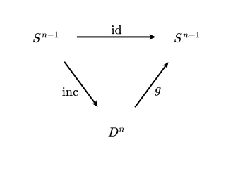

SubsubsectionTopology from the categorical viewpoint
Aside
One of the primary insights of twentieth century mathematics is that objects should not be studied in isolation. Rather, to understand objects we must also understand relationships between objects. Topologies offer one notion of “relation”, organizing the points of a set into neighborhoods. As an abstraction of geometry, topology is immensely successful, but it fails to capture a second, more structural notion of relation.
Category theory organizes objects by their transformations. Once these notions of object and relation are abstracted, it becomes possible to compare and contrast different fields of mathematics. Theorems about wildly different mathematical objects are often identical in their categorical content. In this manner, category theory becomes a meta-mathematical tool for both identifying and conjecturing structural results.
Our present goal is to use the language of category theory to motivate definitions and interpret theorems. Moving into the algebro-topological portion of the course, this language will become even more important as we use the homology functor to compare the categories of topological spaces and vector spaces.
We begin with a motivating example. Sets are a type of mathematical object. Sets are related by functions. Each function has a domain (source) and codomain (target). In standard notation, \(f:A\to B\) denotes a function with domain \(A\) and codomain \(B\text{.}\) Of course, functions admit composition: given \(g:B\to C\) and \(f:A\to B\) we can form \(g\circ f:A\to C\) by assigning \(g(f(a))\) to \(a\in A\text{.}\) This composition is associative: if \(f:A\to B\text{,}\)\(g:B\to C\text{,}\) and \(h:C\to D\) are functions, then
\begin{equation*}
h\circ(g\circ f) = (h\circ g)\circ f.
\end{equation*}
Moreover, each set (even the empty set!) admits an identity function \(\operatorname{id}_A:A\to A\text{.}\) This function takes each \(a\in A\) to \(a\) and satisfies the following property: for each \(g:A\to B\) and each \(f:C\to A\text{,}\)
In the following definition, we will see that categories consist of objects, morphisms (with source and target objects), composition, and identity morphisms satisfying associativity and identity properties. As such, sets and functions form our first example of a category.
A category \(\mathcal{C}\) consists of a collection of objects \(\mathrm{Ob}\,\mathcal{C}\) and a collection of morphisms \(\mathrm{Mor}\,\mathcal{C}\) along with assignments \(s,t:\mathrm{Mor}\,\mathcal{C}\to \mathrm{Ob}\,\mathcal{C}\) (called the source and target maps). Let \(\mathcal{C}(x,y)\subseteq \mathrm{Mor}\,\mathcal{C}\) denote the collection of morphisms with source \(x\in \mathrm{Ob}\,\mathcal{C}\) and target \(y\in \mathrm{Ob}\,\mathcal{C}\text{.}\) Then for each \(x,y,z\in \mathrm{Ob}\,\mathcal{C}\text{,}\)\(\mathcal{C}\) is also equipped with a composition
Additionally, for each \(x\in \mathrm{Ob}\,\mathcal{C}\) there is an identity morphism \(\operatorname{id}_x\in \mathcal{C}(x,x)\text{.}\) This data must satisfy the following properties:
It is useful to think about categories diagrammatically. These diagrams use letters to represent objects, and labelled arrows to represent morphisms. So if \(x,y\in \mathrm{Ob}\,\mathcal{C}\) and \(f\in \mathcal{C}(x,y)\text{,}\) we may draw an arrow from \(x\) to \(y\) labelled \(f\) in order to represent that \(f\) is a morphism with source \(x\) and target \(y\text{.}\) (Note that we have dropped \(\mathcal{C}\) from our notation here: usually it will be clear from context which category we are working in.) We may also write \(f\colon x\to y\) to represent \(f\in \mathcal{C}(x,y)\text{.}\)
Now suppose that in addition to \(f\) we also have a morphism \(g\colon y\to z\text{.}\) Composition tells us that we then get a new morphism \(g\circ f\colon x\to z\text{.}\) We can put all of this information into a single commutative diagram.
A triangle with objects \(x\text{,}\)\(y\text{,}\)\(z\) and arrows \(f\colon x\to y\text{,}\)\(g\colon y\to z\text{,}\) and \(g\circ f\colon x\to z\text{.}\) The arrows form a triangle with indicated sources and targets.
When we say that a diagram like the one above commutes, we are saying precisely that the two paths from \(x\) to \(z\) determine the same morphism, i.e. the bottom arrow equals the composite of the two slanted arrows. The geometric presentation of the diagram is unimportant; we can rearrange the nodes without changing the meaning.
We can also use diagrams to express the axioms for a category. Associativity can be pictured as the statement that two different ways of composing \(f\text{,}\)\(g\text{,}\) and \(h\) agree.
A four-object diagram showing arrows \(f\text{,}\)\(g\text{,}\)\(h\) and the composites \(g\circ f\text{,}\)\(h\circ g\text{.}\)
We can interpret this axiom as saying that we can paste together commutative triangles to produce commutative quadrilaterals. The identity axiom also admits a simple diagrammatic expression.
We have already mentioned that sets and functions form a category. We denote this category \(\mathsf{Set}\text{.}\) Similarly, there is a category \(\mathsf{FinSet}\) with objects finite sets and morphisms functions between finite sets.
Example2.2.3.The category of vector spaces and linear transformations.
Let \(k\) be a field and let \(\mathsf{Vect}_k\) have objects \(k\)-vector spaces and morphisms \(k\)-linear transformations. Since linear transformations compose (in the set-theoretic sense) to give new linear transformations, \(\mathsf{Vect}_k\) is also a category. (It is obvious that the identity function \(1_V:V\to V\) is linear.) We can also consider the category \(\mathsf{FinVect}_k\) of finite-dimensional \(k\)-vector spaces and \(k\)-linear transformations.
The empty category \(\varnothing\) has no objects (i.e. \(\mathrm{Ob}\,\varnothing=\varnothing\)) and no morphisms (\(\mathrm{Mor}\,\varnothing=\varnothing\)). The source, target, and composition functions are all the empty function \(\varnothing\to\varnothing\) and all properties are satisfied vacuously!
The trivial category \(\bullet\) has a singleton set \(\{*\}\) for its objects and a single morphism (necessarily the identity on \(*\)), \(\operatorname{id}_*:* \to *\text{.}\) The only composition to define is \(\operatorname{id}_*\circ \operatorname{id}_*=\operatorname{id}_*\) and this is enough to check the associativity and identity properties as well.
Example2.2.6.A category whose morphisms are not functions.
Not every category has special classes of functions as morphisms. Consider \(\mathsf{Mat}_k\) whose objects are the natural numbers \(\mathbb{N}=\{0,1,2,\ldots\}\) and whose morphisms \(\mathsf{Mat}_k(m,n)\) are \(n\times m\) matrices with entries in a field \(k\text{.}\) Composition is given by matrix multiplication (check compatibility!) and \(\operatorname{id}_k\) is the \(k\times k\) identity matrix. Since matrix multiplication is associative, this forms a category.
If you are suspicious that this category is eerily similar to \(\mathsf{FinVect}_k\text{,}\) worry not: it is! After studying equivalences of categories and skeleta, you will understand exactly how similar.
The following two examples should seem completely obvious if you have already taken a course in abstract algebra. If you have not, there is no harm in skipping them.
There are categories \(\mathsf{Gp}\text{,}\)\(\mathsf{FinGp}\text{,}\) and \(\mathsf{AbGp}\) of groups, finite groups, and Abelian groups, respectively. In each case, morphisms are group homomorphisms.
There are categories \(\mathsf{Ring}\) and \(\mathsf{CommRing}\) of rings and commutative rings, respectively. In both cases, morphisms are ring homomorphisms. There is also a category \(\mathsf{Field}\) of fields and field homomorphisms.
Example2.2.9.The category of topological spaces and continuous functions.
The category \(\mathsf{Top}\) has topological spaces as its objects and continuous functions as its morphisms. In order to check this, we must see that the composition of continuous functions is continuous and that identity functions are continuous. If \(X\) is a topological space and \(\operatorname{id}_X:X\to X\) is the identity function, then for any \(U\subseteq X\) open, \(\operatorname{id}_X^{-1}(U)=U\) is open in \(X\text{,}\) so \(\operatorname{id}\operatorname{id}_X\) is continuous. The associativity and identity axioms hold because they hold for functions.
Of course, there is also a category whose objects are topological spaces and morphisms are arbitrary functions between underlying sets. And while we are free to define such a category, it is not of particular interest. A category is a tool for studying relationships between objects. If we choose the wrong set of relationships (i.e. the wrong morphisms), then we end up with an uninteresting — or, worse yet, misleading — category.
If category theory is all about relations between mathematical objects, and categories are themselves mathematical objects then we need a way to compare — or relate — categories. This is what functors do.
A functor from a category \(\mathsf C\) to a category \(\mathsf D\text{,}\) denoted \(F\colon \mathsf C\to \mathsf D\) is an assignment on objects \(F\colon \operatorname{Ob} \mathsf C\to \operatorname{Ob} \mathsf D\) together with an assignment on morphisms \(F\colon \mathsf C(x,y)\to \mathsf D(Fx,Fy)\) for each \(x,y\in \operatorname{Ob} \mathsf C\) satisfying the following properties:
for all \(x\in\operatorname{Ob} \mathsf C\text{,}\)\(F\operatorname{id}_x = \operatorname{id}_{Fx}\text{,}\) and
There are multiple functors associated with the power set construction \(X\mapsto 2^X\text{.}\) Our first example is direct image, which takes \(X\mapsto 2^X\) and \((f\colon X\to Y)\mapsto (f\colon 2^X\to 2^Y,~A\mapsto f[A]\text{.}\) You should check that the identity function maps to the identity on power sets, and that direct image commutes with composition, i.e., \((g\circ f)[A] = g[f[A]]\text{.}\)
Some functors "reverse arrows". For instance, preimages famously satisfy \((g\circ f)^{-1} = f^{-1}\circ g^{-1}\text{.}\) To handle this formally, we make the following definition.
Given a category \(\mathsf C\text{,}\) its opposite category \(\mathsf C^{\mathrm{op}}\) has the same objects as \(\mathsf C\) and \(\mathsf C^{\mathrm{op}}(x,y) = \mathsf C(y,x)\text{.}\) Composition in \(\mathsf C^{\mathrm{op}}\) is given by composing in the swapped order in \(\mathsf C\text{,}\) and identities are the same as in \(\mathsf C\text{.}\)
A functor that "reverses arrows" can now be encoded as a functor \(\mathsf C^{\mathrm{op}}\to \mathsf D\text{.}\) Some authors call this a contravariant functor \(\mathsf C\to \mathsf D\text{,}\) but we will try to avoid this language here.
The power set construction on objects also admits preimage as its functorial assignment on morphisms. That is, there is a functor \(\mathsf{Set}^{\mathrm{op}}\to \mathsf{Set}\) given by
Functors are fantastic tools. One thing you can do with them is prove existence results like the Brouwer fixed-point theorem. A fixed point of a function \(f\colon X\to X\) is a point \(x\in X\) for which \(f(x)=x\text{.}\)
Let \(D^n := \{x\in \mathbb R^n\mid \lVert x\rVert \le 1\}\) denote the closed unit disk in Euclidean \(n\)-space for some \(n\ge 0\text{.}\) Then every continuous function \(D^n\to D^n\) has a fixed point.
Let \(f\colon D^n\to D^n\) be a continuous function and suppose for contradiction that \(f\) does not admit a fixed point. Then there is a well-defined continuous function \(g\colon D^n \to S^{n-1} \) taking \(x\) to the unique point on \(S^{n-1}\) through which the ray from \(f(x)\) to \(x\) passes. (Can you prove that this is continuous?) Since it will be important momentarily, note that the restriction of \(g\) to \(S^{n-1}\subseteq D^n\) is the identity map.
Since the restriction of \(g\) to \(S^{n-1}\) is the identity, we know that the diagram

A commutative diagram with \(S^{n-1}\) at upper left and upper right, and \(D^n\) at the bottom. Arrows: \(\operatorname{id}\) from the left \(S^{n-1}\) to the right \(S^{n-1}\text{;}\)\(\operatorname{inc}\) from the left \(S^{n-1}\) down to \(D^n\text{;}\) and \(g\) from \(D^n\) up to the right \(S^{n-1}\text{.}\)
commutes. Applying \(H_{n-1}\text{,}\) it follows that the diagram
A commutative diagram with \(H_{n-1}S^{n-1}\) at upper left and upper right, and \(0\) at the bottom. Arrows: \(\operatorname{id}\) from the left \(H_{n-1}S^{n-1}\) to the right \(H_{n-1}S^{n-1}\text{;}\)\(H_{n-1}\operatorname{inc}\) from the left \(H_{n-1}S^{n-1}\) down to \(0\text{;}\) and \(H_{n-1}g\) from \(0\) up to the right \(H_{n-1}S^{n-1}\text{.}\)
commutes. This is a contradiction since the identity map between nonzero Abelian groups does not factor through the trivial group! We conclude that a fixed point must exist after all.
We now undertake the construction of new topological spaces from old ones, with a focus on the subspace, product, coproduct, and quotient topologies. Later, we will also talk about function spaces.
By stating the universal property of our \(\mathsf{Top}\)-situated construction in other categories, we can deepen our understanding and build bridges between topology and other parts of mathematics.
Given a space \(X\) and subset \(A\subseteq X\text{,}\) we have already defined the subspace topology on \(A\text{.}\) It has open sets of the form \(A\cap U\) where \(U\subseteq X\) is open.
Definition2.2.17.Subspace topology by universal property.
Suppose \(X\) is a space, \(A\) is a set, and \(i\colon A\to X\) is an injective function. Then the subspace topology on \(A\) (relative to \(i\)) is the topology satisfying the following universal property:
\(i\colon A\to X\) is continuous and for any space \(K\) and function \(f\colon K\to A\text{,}\) the map \(f\) is continuous if and only if \(i\circ f\colon K\to X\) is continuous.
Suppose \(X\) is a space, \(A\) is a set, and \(i\colon A\to X\) is an injective function. If \((A,\tau)\) and \((A,\tau')\) are topologies on \(A\) satisfying the condition of Definition 2.2.17, then \(\tau=\tau'\text{.}\)
Take \(K = (A,\tau')\) and \(f=\operatorname{id}\colon A\to A\text{.}\) Since \(i\circ f=i\text{,}\) the universal property of \((A,\tau)\) implies that \(\operatorname{id}\colon (A,\tau')\to (A,\tau)\) is continuous. The analogous argument with \(K = (A,\tau)\) invoking the universal property of \((A,\tau')\) implies that \(\operatorname{id}\colon (A,\tau)\to (A,\tau')\) is continuous. We conclude that \(\operatorname{id}\colon (A,\tau)\to (A,\tau')\) is a homeomorphism. The reader may check that the identity map is a homeomorphism if and only if \(\tau=\tau'\text{.}\)
The above proposition is critical for checking that at most one topology on \(A\) is a subspace topology on \(A\text{.}\) But more is needed — we must also know that at least one subspace topology on \(A\) exists!
Endow \(A\) with the topology \(\tau_{\text{sub}}\text{.}\) Fix a space \(K\) and function \(f\colon K\to A\text{.}\) For the forwards implication, suppose that \(f\) is continuous. We need to check that \(i\circ f\) is continuous. Since continuity is preserved by composition, it suffices to prove that \(i\colon A\to X\) is continuous with respect to \(\tau_{\text{sub}}\text{.}\) This follows immediately from the definitions of continuity and \(\tau_{\text{sub}}\text{.}\)
For the backwards implication, suppose that \(i\circ f\colon K\to X\) is continuous (without assuming \(f\) is continuous). Suppose \(V\in \tau_{\text{sub}}\text{.}\) Then \(V = i^{-1}U\) for some \(U\subseteq X\) open. We observe that
We are now justified in talking about the subspace topology on \(A\) (relative to the injection \(i\colon A\to X\)). We have already seen a number of examples of subspaces, so we only provide one new one here.
Example2.2.21.A non-discrete countable subspace of \(\mathbb R\) in which all but one point is isolated.
Consider the set \(A:= \{0\}\cup \{1/n\mid n\in \mathbb Z_{\gt 0}\}\subseteq \mathbb R\) with the subspace topology. Despite being in natural bijection with the discrete subspace \(\mathbb N\subseteq \mathbb R\text{,}\) it is not the case that \(A\) is discrete. Indeed, every open subset of \(A\) containing \(0\) contains other elements of \(A\) as well, whereas every point of \(\mathbb N\) is isolated — its associated singleton subset is open. You should check that every nonzero element of \(A\) is isolated.
Quotients are ubiquitous, and you are already familiar with some important examples. For instance, modular arithmetic passes from the integers \(\mathbb Z\) to the integers mod \(n\text{,}\)\(\mathbb Z/n\mathbb Z\text{.}\) The elements of the latter are equivalence classes of the form \(x+n\mathbb Z\) for \(x\in \mathbb Z\text{.}\) Of course, there are only \(n\) such equivalence classes since \(x+n\mathbb Z=y+n\mathbb Z\) if and only if \(x-y\in n\mathbb Z\text{.}\)
This motivating example is not so interesting topologically since we usually view \(\mathbb Z\) as a discrete space. But here is a related construction: for real numbers \(x,y\text{,}\) declare \(x\sim y\) if and only if \(x-y\in \mathbb Z\text{.}\) We will call this quotient \(\mathbb R/\mathbb Z\text{.}\)
Here’s another case in which a topology on quotients would be useful. The idea is that we would like a space whose points parametrize lines through the origin in \(\mathbb R^{n+1}\text{.}\) As a first attempt, we might imagine an equivalence relation on \(\mathbb R^{n+1}\) where \(x\sim y\) if and only if \(x\) and \(y\) are on the same line through the origin. This immediately hits a snag since every line through the origin contains the origin, so \(x\sim 0\sim y\) for all \(x,y\in\mathbb R^{n+1}\) and we have collapsed everything into the same equivalence class. But there is an easy fix: first remove the origin from \(\mathbb R^{n+1}\text{,}\) and then declare \(x\sim y\) :iff \(x\) and \(y\) are on the same line through the origin. Equivalently, \(x\sim y\) if and only if \(x=\lambda y\) for some \(\lambda\in \mathbb R^\times = \mathbb R\smallsetminus \{0\}\text{.}\)
We write \(\mathbb{RP}^n := (\mathbb R^{n+1}\smallsetminus \{0\})/\sim\) and call this space real projective \(n\)-space. But we haven’t pinned down the topology yet! The "collapsing" occuring in the quotient is far more dramatic here, and it is less clear what the resulting space "looks like".
Definition2.2.24.Quotient topology by universal property.
Let \(X\) be a space and let \(q\colon X\to Z\) be a surjective function. The quotient topology on \(Z\) satisfies the following universal property:
the map \(q\colon X\to Z\) is continuous and, for any space \(K\text{,}\) a function \(f\colon Z\to K\) is continuous if and only if the composite \(f\circ q\colon X\to Z\to K\) is continuous.
In many practical situations, we will have a quotient map \(q\colon X\to Z\) at hand, and also a continuous function \(f\colon X\to Y\text{,}\) and we will want to know whether \(f\) extends along \(q\text{.}\) That is, is there a continuous function \(\tilde f\colon Z\to Y\) such that \(\tilde f\circ q=f\text{?}\) This is best split up into a set theoretic and topological component.
Proposition2.2.26.Fiber-preserving functions factor through the quotient.
Suppose \(q\colon X\to Z\) is a surjective function and \(f\colon X\to Y\) is some other function. Then \(f\) factors through \(Z\) (via \(q\)) — that is, there exists \(\tilde f\colon Z\to Y\) such that \(f=\tilde f \circ q\) — if and only if \(f\) is constant on the fibers of \(q\text{.}\)
Suppose \(q\colon X\to Z\) is a quotient map in \(\mathsf{Top}\) and \(f\colon X\to Y\) is a continuous function. Then \(f\) admits a continuous factorization through \(Z\) if and only if \(f\) is constant on the fibers of \(q\text{.}\)
Since \(f\) is constant on fibers, Proposition 2.2.26 provides a function \(\tilde f\colon Z\to Y\) such that \(f=\tilde f\circ q\text{.}\) Now Definition 2.2.24 kicks in and tells us that \(\tilde f\) is continuous because \(f\) is.
First observe that \(q\colon X\to (Z,\tau_{\text{quot}})\) is continuous by definition of \(\tau_{\text{quot}}\text{.}\) We now need to show that for a space \(K\) and function \(f\colon Z\to K\text{,}\)\(f\) is continuous if and only if \(f\circ q\) is continuous. The forwards direction is automatic since composition preserves continuity. For the backwards direction, suppose \(f\circ q\) is continuous. Given \(U\subseteq K\) open, we need to guarantee that \(f^{-1}U\subseteq Z\) is open in \(Z\text{.}\) By definition of \(\tau_{\text{quot}}\text{,}\) this is the case if and only if \(q^{-1}[f^{-1}U]\subseteq X\) is open. But of course \(q^{-1}[f^{-1}U]\subseteq X = (f\circ q)^{-1}U\text{,}\) and the latter is open by continuity of \(f\circ q\text{.}\)